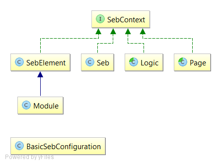
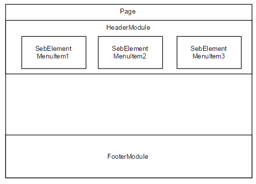

Introduction
Seb is framework extending function of Selenium. It is based on Groovy framework called Geb. Before going into this documentation we advice to go through Selenium Webdriver documentation first to understand basic concepts.
Dependency
You can add dependency by using Maven:
<dependency>
<groupId>cz.etnetera</groupId>
<artifactId>seb</artifactId>
<version>0.5.1</version>
</dependency>
Basic components

BasicSebConfiguration- Config class used to start Seb.SebContext- Common interface for providing Seb-related methods and stacking different components one on another. Usually not used directly.SebElement- Wraps traditional WebElement from Selenium.Module- Class containing other SebElements/Modules.Seb- Wrapper for Selenium WebDriver (or more specifically EventFiringWebDriver).Logic- Class containing sequence of commonly used actions going through multiple pages.Page- Representation of PageObject.

Locating elements
Integral part of writing automatic tests is locating the elements on the page so you can interact with them. In best case you can use element name or id. If none of them is provided you have to use CSS selectors (preferably) or XPath (which is slightly slower due to the fact that unlike CSS selectors, it can query upwards - from child to parent element)
Skeleton project
For quick start you can clone skeleton project from github.